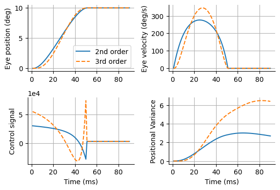

終点誤差分散最小モデル (minimum-variance model)
Contents
終点誤差分散最小モデル (minimum-variance model)#
終点誤差分散最小モデル (minimum-variance model; [Harris and Wolpert, 1998])を実装する．
\(\mathbf{A}\in \mathbb{R}^{n\times n}\), \(\mathbf{B}\in \mathbb{R}^{n}\)とする．\(\dot{x}=\mathbf{A}_{c}\mathbf{x}+\mathbf{B}_{c}(u + w)\)について，差分化すると
\[\begin{split}
\begin{align}
\mathbf{x}(t+dt)&=\mathbf{x}(t)+\dot{\mathbf{x}}dt\\
\mathbf{x}_{t+1}&=\mathbf{I}\mathbf{x}_t+(\mathbf{A}_{c}dt)\mathbf{x}_t+(\mathbf{B}_{c}dt)(u + w)
\end{align}
\end{split}\]
となる(ここで\(\mathbf{I}\)は単位行列)ので，\(\mathbf{A}=\mathbf{I}+\mathbf{A}_{c}dt, \mathbf{B}=\mathbf{B}_cdt\)として
\[
\mathbf{x}_{t+1} = \mathbf{A} \mathbf{x}_t + \mathbf{B}(u_t + w_t)
\]
と表せる． \(\mathbf{x}_t\)の平均は
\[
\mathbb{E}\left[\mathbf{x}_{t}\right]=\mathbf{A}^{t} \mathbf{x}_{0}+\sum_{i=0}^{t-1} \mathbf{A}^{t-1-i} \mathbf{B} u_{i}
\]
\(\mathbf{x}_t\)の分散は
\[
\operatorname{Cov}\left[\mathbf{x}_{t}\right]=k \sum_{i=0}^{t-1}\left(\mathbf{A}^{t-1-i} \mathbf{B}\right)\left(\mathbf{A}^{t-1-i} \mathbf{B}\right)^{\top} u_{i}^{2}
\]
となる．
終点誤差分散最小モデルの実装#
以下では田中先生のhttps://www.motorcontrol.jp/archives/?MC13のコードを参考に作成した．
using LinearAlgebra, Random, PyPlot
rc("axes.spines", top=false, right=false)
# Equality Constrained Quadratic Programming
function solveEqualityConstrainedQuadProg(P, q, A, b)
"""
minimize : 1/2 * x'*P*x + q'*x
subject to : A*x = b
"""
K = [P A'; A zeros(size(A)[1], size(A)[1])] # KKT matrix
sol = K \ [-q; b]
return sol[1:size(A)[2]]
end;
function minimum_variance_model(Ac, Bc, x0, xf, tf, tp, dt)
dims = size(x0)[1]
ntf = round(Int, tf/dt)
ntp = round(Int, tp/dt)
nt = ntf + ntp # total time steps
A = I(dims) + Ac * dt
B = Bc*dt
#A = exp(Ac*dt);
#B = Ac^-1 * (I(dims) - A) *Bc;
# calculation of V
diagV = zeros(nt);
for t=0:nt-1
if t < ntf
diagV[t+1] = sum([(A^(k-t-1) * B * B' * A'^(k-t-1))[1,1] for k=ntf:nt-1])
else
diagV[t+1] = diagV[t] + (A^(nt-t-2) * B * B' * A'^(nt-t-2))[1,1]
end
end
diagV /= maximum(diagV) # for numerical stability
V = Diagonal(diagV);
# 制約条件における行列Cとベクトルdの計算
#calculation of C
C = zeros(dims*(ntp+1), nt);
for p=1:ntp+1
for q=1:nt
if ntf-1+(p-1)-(q-1) >= 0
idx = dims*(p-1)+1:dims*p
C[idx, q] = A^(ntf-1-(q-1)+(p-1)) * B # if ntf-1-(q-1)+(p-1) == 0; A^(ntf-1-(q-1)+(p-1))*B equal to B
end
end
end
# calculation of d
d = vcat([xf - A^(ntf+t) * x0 for t=0:ntp]...);
# 制御信号を二次計画法で計算 (solution by quadratic programming)
u = solveEqualityConstrainedQuadProg(V, zeros(nt), C, d);
# 制御信号を二次計画法で計算 (forward solution)
x = zeros(dims, nt);
x[:,1] = x0;
Σ = zeros(dims, dims, nt);
Σ[:, :, 1] = B * u[1]^2 * B'
for t=1:nt-1
x[:,t+1] = A*x[:, t] + B*u[t] # update
Σ[:, :, t+1] = A * Σ[:, :, t] * A' + B * u[t]^2 * B' # variance
end
return x, u, Σ
end
minimum_variance_model (generic function with 1 method)
t1 = 224*1e-3 # time const of eye dynamics (s)
t2 = 13*1e-3 # another time const of eye dynamics (s)
tm = 10*1e-3
dt = 1e-3 # simulation time step (s)
tf = 50*1e-3 # movement duration (s)
tp = 40*1e-3 # post-movement duration (s)
nt = round(Int, (tf+tp)/dt) # total time steps
trange = (1:nt) * dt * 1e3 # ms
# 2nd order
x0₂ = zeros(2) # initial state (pos=0, vel=0)
xf₂ = [10, 0] # final state (pos=10, vel=0)
Ac₂ = [0 1; -1/(t1*t2) -1/t1-1/t2];
Bc₂ = [0, 1]
# 3rd order
x0₃ = zeros(3) # initial state (pos=0, vel=0, acc=0)
xf₃ = [10, 0, 0] # final state (pos=10, vel=0, acc=0)
Ac₃ = [0 1 0; 0 0 1; -1/(t1*t2*tm) -1/(t1*t2)-1/(t1*tm)-1/(t2*tm) -1/t1-1/t2-1/tm];
Bc₃ = [0, 0, 1/tm];
x₂, u₂, Σ₂ = minimum_variance_model(Ac₂, Bc₂, x0₂, xf₂, tf, tp, dt);
x₃, u₃, Σ₃ = minimum_variance_model(Ac₃, Bc₃, x0₃, xf₃, tf, tp, dt);
結果の描画．
figure(figsize=(6, 4))
subplot(2,2,1); plot(trange, x₂[1, :], label="2nd order"); plot(trange, x₃[1, :], "--", label="3rd order");
ylabel("Eye position (deg)"); grid(); legend()
subplot(2,2,2); plot(trange, x₂[2, :]); plot(trange, x₃[2, :], "--");
ylabel("Eye velocity (deg/s)"); grid();
subplot(2,2,3); plot(trange, u₂); plot(trange, u₃, "--");
ylabel("Control signal"); xlabel("Time (ms)"); grid();
ax = gca(); ax[:ticklabel_format](style="sci",axis="y",scilimits=(0,0))
subplot(2,2,4); plot(trange, Σ₂[1,1,:]); plot(trange, Σ₃[1,1,:], "--");
ylabel("Positional Variance"); xlabel("Time (ms)"); grid()
tight_layout()
